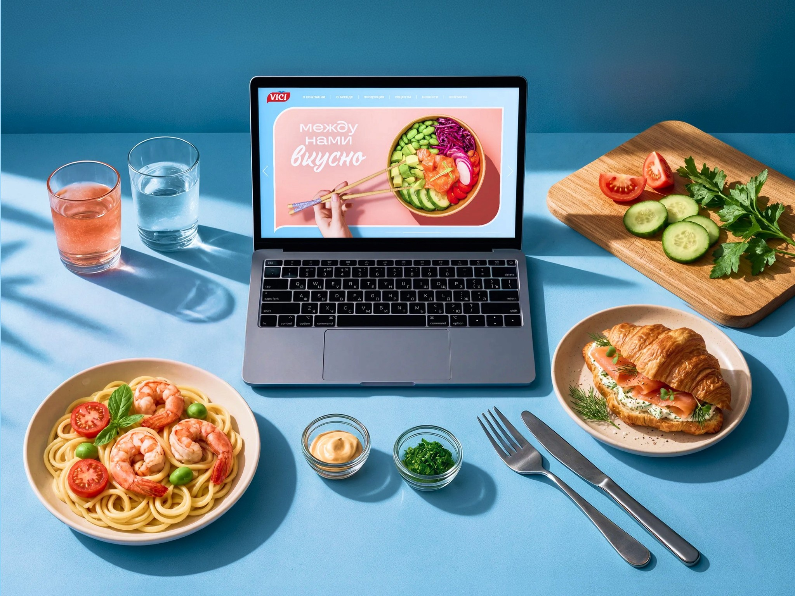
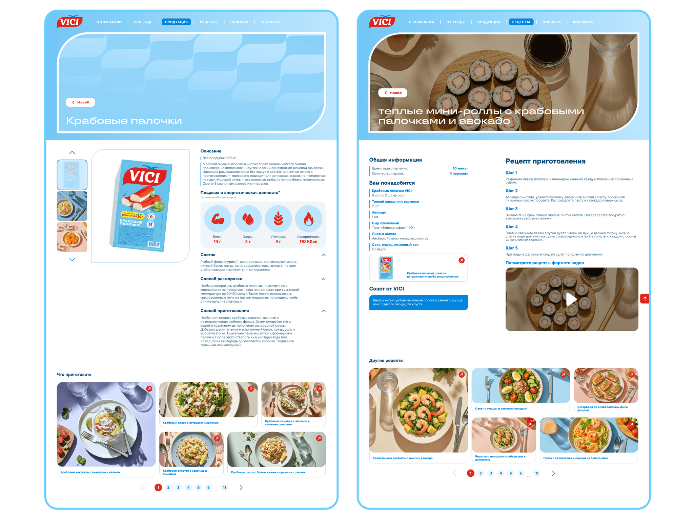
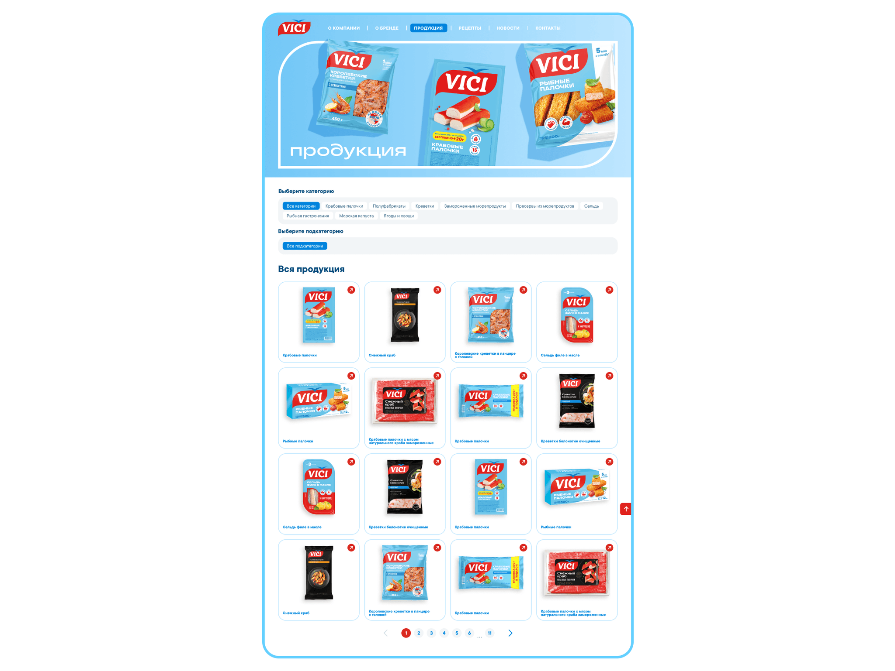
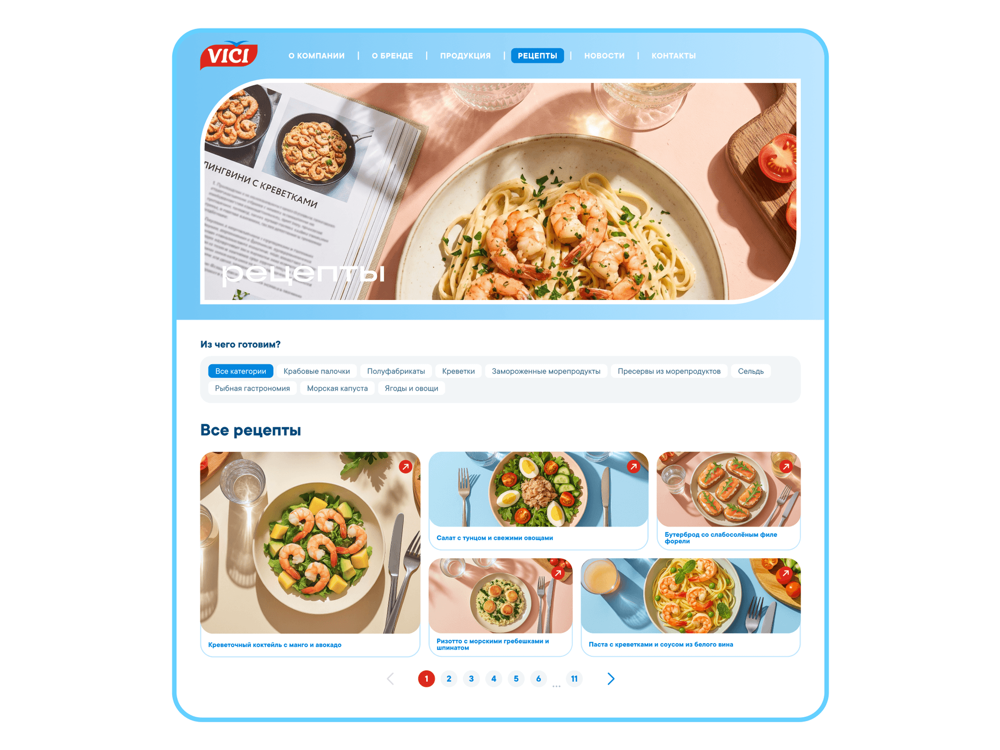
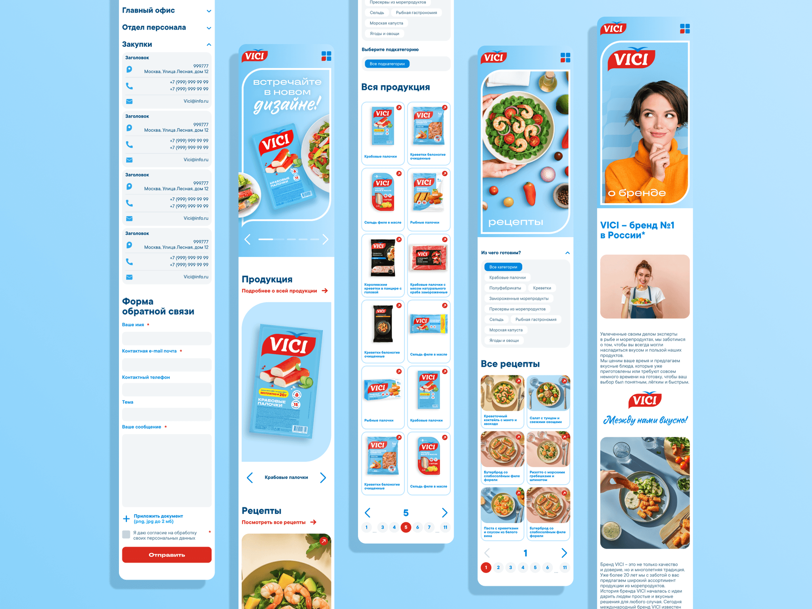
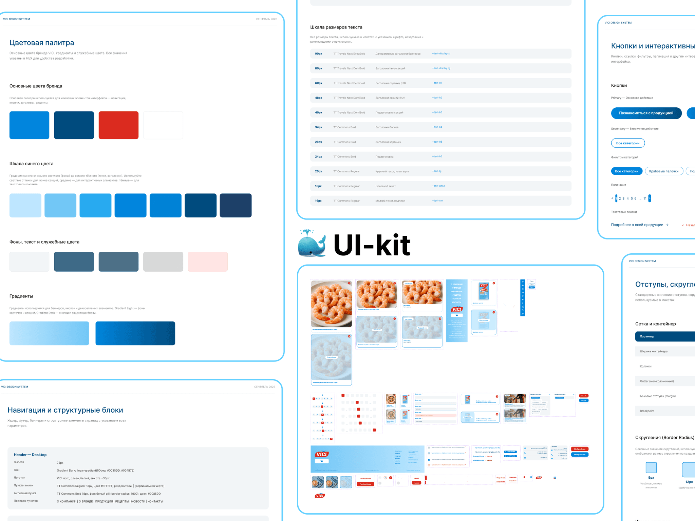
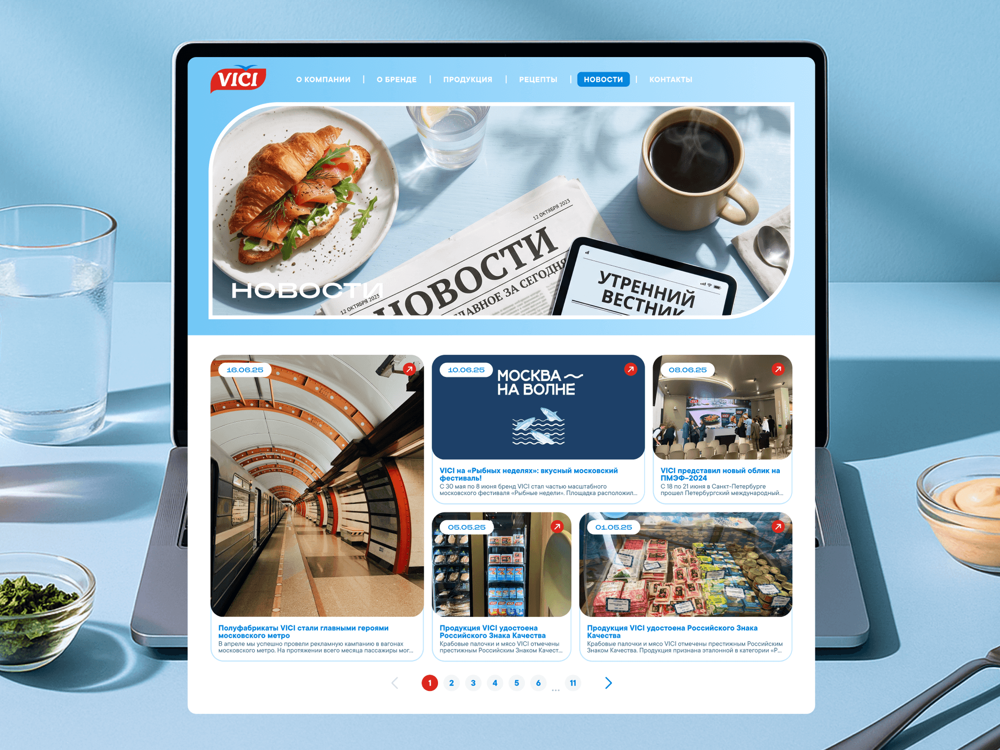
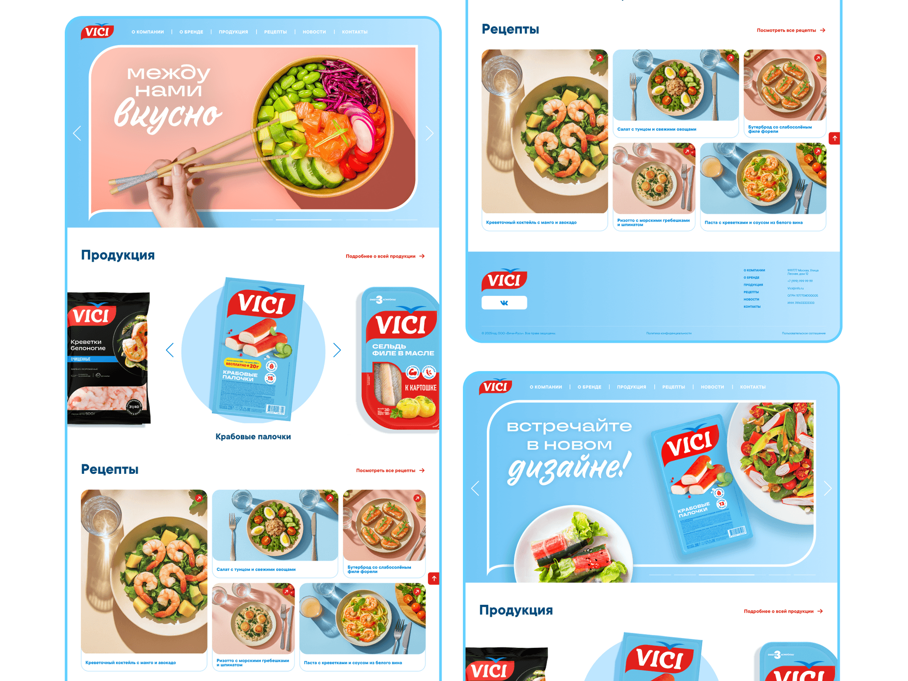

vici
VICI is a large food company and one of the main producers of fish and seafood in Europe.
The brand is best known for its crab sticks made from surimi fish paste. For decades the red packs with the VICI logo were the most popular product in this category across the former Soviet countries.
in this case
-
I turned the catalog into a cooking magazine.
I linked products and recipes: from a dinner idea to a pack on the shelf. -
A website without a cart that still helps sell.
How to measure the website’s value for offline sales. -
Why a storefront redesign alone wasn’t enough: the site still had dead ends.
Three hypotheses and ICE scoring. -
In the first version a recipe led nowhere.
How I found a dead end when I went through the shopper’s scenario on the prototype.
 web-design
web-designProject at a glance
Role. I was the only designer on the team and was responsible for all website design.
Term. 2 months from the briefing to the transfer to the development of layouts with adaptations.
Starting point. A redesign after a rebrand. The old website didn’t lead people to buy the brand’s products.
What I did. Research, information architecture, mockups for all devices, the design system and a map of links between recipes and products.
Outcome. A website on the brand’s new design code for all devices and a ready content link map for development.
Task and constraints
The task was to make a minimalist website design based on the brand’s new design code and adapt it to all devices.
Business goal: increase time on site and build deferred demand, that is, the wish to buy the products in a regular store. The website has no cart, so it has to sell through shopper behavior.
Technical constraint from the client: pages had to open fast on mobile internet right in the store, where the connection is often weak. The client limited page weight, so heavy video and animation couldn’t be used.
What I found out
How people use the product. People rarely look up the specs of herring or shrimp on a producer’s website. They need to decide what to cook for dinner or a holiday. My conclusion was that the website should sell the finished dish, not the product itself, and work as a cooking magazine.
Map of the old website. The “Products” and “Recipes” sections weren’t connected at all. From the fish catalog people hit a dead end and left. So the site needed linking in a loop: the catalog suggests recipes, and a recipe leads to the brand’s products.
Context. People often check the website on their phone while standing at the shelf. So the mobile version has to be easy to use with one hand.

Three hypotheses and how I chose
To compare the hypotheses I scored them with ICE. Impact: how strongly the hypothesis would move the key metrics, which are time on site and purchases at the shelf. Scored from 1 to 10. Confidence: how sure I am of the effect given the research data, from 0 to 100%. Ease: how much time, resources and team effort it takes, from 1 to 10, where 10 is easiest. The total score is Impact × Confidence × Ease.
Hypothesis A. A beautiful catalog. Refresh the storefront with the new design code. The site becomes more modern, but the dead ends stay.
Impact 3/10 · Confidence 60% · Ease 5/10 → ICE 9
Hypothesis B. A separate recipe blog. The content will bring traffic, but if it doesn’t lead to products, it won’t get to a purchase.
Impact 5/10 · Confidence 50% · Ease 5/10 → ICE 12.5
Hypothesis C. A cooking magazine where recipes and products are linked. The user path is built around recipes, and from every recipe you can go to a specific product.
Impact 9/10 · Confidence 70% · Ease 3/10 → ICE 18.9
I chose C because it has the highest ICE score: 18.9 versus 9 and 12.5. It is the hardest to build, but it is the only one that both increases time on site and leads people to buy in the store. The risk was that for a manufacturer this changes the website’s role from storefront to magazine. I discussed that with the client separately.
Where I was wrong and what I changed
A recipe that led nowhere. In the first version of the mockups I focused on the new design code and kept the old website’s structure, where products and recipes were separate. Then I built a prototype and went through the shopper’s scenario on it: I’m looking for a dinner idea and want to know what to buy. The path broke off at the end of the recipe. You couldn’t go from the dish to a product, and from a product card you couldn’t find what to cook with it.
After that I linked the catalog and recipes in both directions and added recommendations at the end of each recipe. This became the main decision of the project.
A blue that was hard to read on white. The brand blue from the new design code didn’t have enough contrast on a white background for text and links. I saw this when I checked the mockups for contrast. For text I adjusted the shade, and in large accents I kept the original color.
Decisions and what they target
Catalog and recipes linked both ways. A product card has a “What to cook with it” block with recipes. A recipe page has an “Ingredients from VICI” block with a link to the product card.
What it targets: clicks from recipes to products, so people leave the website already knowing which pack to buy. The linking also helps with search promotion.

Recommendations at the end of a recipe. For example, after a recipe for croissants with shrimp the website suggests other quick breakfasts.
What it targets: people always have a next step, so page depth and time on site grow.


A tag system. “Quick”, “For breakfast”, “Seafood” in recipes and products.
What it targets: the right content is found right away, without searching, and there are fewer bounces.

A mobile version for the shopper at the shelf. Larger tap areas and navigation that is always within reach. The recipe’s step-by-step instructions are easy to scroll with one hand, and the brand’s ingredients stay in view. How this solves the page weight constraint: the food looks good thanks to static photos and typography, not video and animation. On a phone the recipe and ingredients load first, and the rest loads as you scroll.
What it targets: the website helps at the moment of choice in the store, and people come back to it like a cookbook on their phone.

Defending the design and handoff
I showed the client the whole logic: from how shoppers behave to the decisions.
How a website without a cart helps sell. The client’s main question was how to tell whether the website affects offline sales. I suggested measuring hidden conversion: clicks from recipes to product cards, page depth, time on site and return visits from phones. Recipes at the center, not the catalog. People come for a dinner idea, and that is what brings them to the shelf.
I handed the mockups to development in good order: screens and states are built with Auto Layout and linked to the UI kit, and animations have comments. Along with the mockups the developers got a content link map showing which recipes lead to which products.
How I work. I did the redesign alone over four months. When the prototype showed a dead end in my own first version, I rebuilt the structure and didn’t hold on to the convenient solution.

Results
The new website is live, but I don’t have numbers after the redesign yet. So I describe what I changed and which metric each change targets.
Product: how the product works and how people use it
Links between products and recipes instead of dead ends: from any recipe you can go to a product and back. Targets hidden conversion, that is, clicks from recipes to product cards.
Recommendations at the end of a recipe: the session doesn’t end on one page. Targets page depth and time on site.
Tags by scenario: “quick”, “for breakfast”, “seafood”. Targets fewer bounces.
A light mobile version for the store: easy to use with one hand and loads fast on weak internet. Targets return visits from phones.
Communication: how the product explains its value to users
The brand shows dishes, not just products: the website reads like a cooking magazine, with dinner ideas, breakfasts and holiday tables.
The brand’s ingredients are visible in every recipe, so people know which pack to look for on the shelf.
A new brand image: a light minimalist interface and appealing food photos are meant to move away from the “cheap frozen food” image and attract a younger audience.
Readability: after the blue was fixed, text and links read well on any screen.

How I used AI
Claude: data collection and analysis. Customer reviews, frequent search queries and an audit of the old site structure. From these I built a matrix of links between recipes and products and a tag scheme. The main benefit is quality: before, I collected data from a small number of sources, while Claude covers many more, so the conclusions rest on a fuller picture. About 5 minutes instead of a full day of manual searching.
Claude + Figma Agent: preparing for development. Styles, layer naming, responsive versions, building the design system and components in all states, finding missing screens and states, checking the user path logic and contrast, comments for developers. About 1 hour including edits instead of 16 hours of manual work.
AI helps me with data collection and routine work. I make the decisions myself and check them myself.